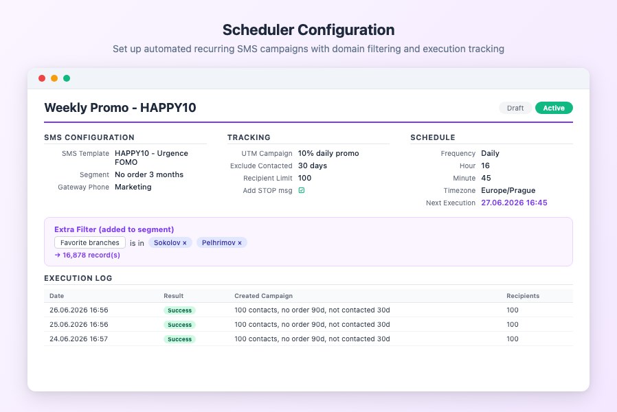
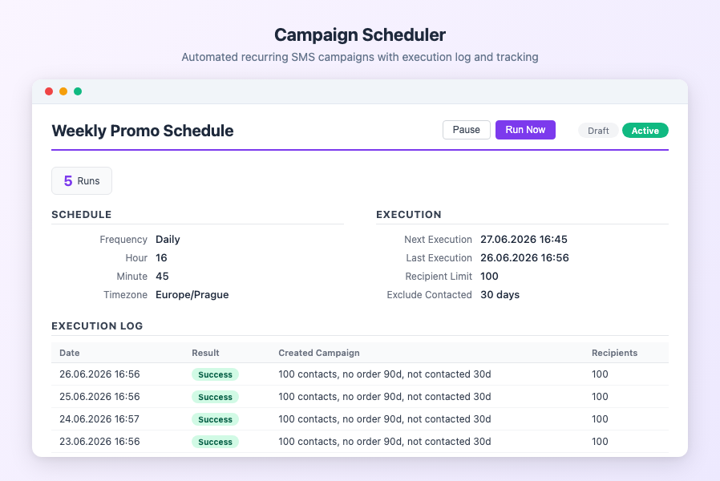
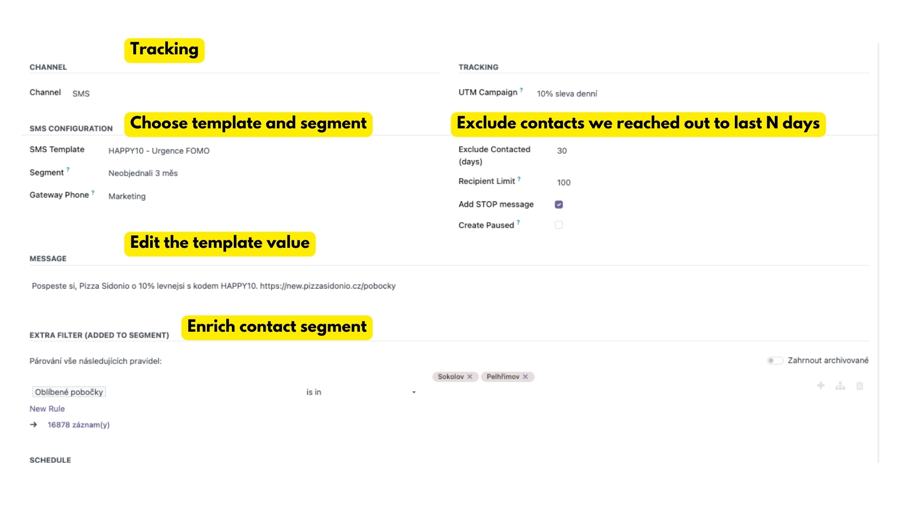
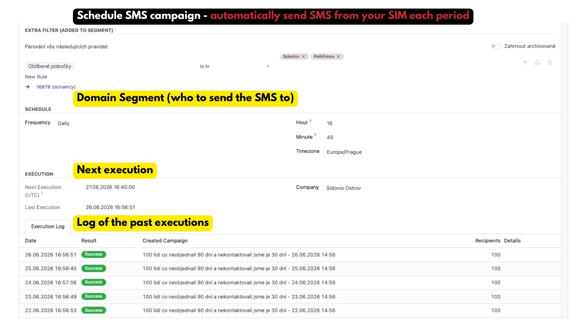

You want to send SMS campaigns on a regular schedule, but Odoo has no built-in way to automate recurring mailings.
Every week you create the same campaign manually: pick a segment, write the message, set the recipients, click send. It is repetitive work that is easy to forget and hard to keep consistent.
This module lets you define a schedule once and it creates the campaign automatically — every day, every week, or every month, at the exact time you choose.
Pick a template, a segment, and a frequency. Set the day and time in your local timezone. Activate the schedule.
A cron job checks schedules every 15 minutes. When the time comes, it creates a real Odoo mass mailing campaign with fresh recipient data.
Every execution is logged with recipient count, status, and a direct link to the created campaign. See exactly what was sent and when.


| Feature | Description |
|---|---|
| Three Frequencies | Daily, weekly (pick day of week), or monthly (pick day of month). Covers most business scheduling needs. |
| Timezone-Aware | Set the send time in your local timezone (e.g. Europe/Prague 09:00). The cron converts to UTC automatically — no manual calculation needed. |
| Live Recipient Resolution | Segment domains are resolved at execution time, not when the schedule was created. New customers matching the segment are included automatically. |
| Duplicate Prevention | Partners who already have unsent SMS from a previous run of the same schedule are excluded. No double messages on rapid re-triggers. |
| Contact-Frequency Control | Exclude partners who received an SMS in the last N days. Prevent over-contacting even with aggressive schedules. |
| Recipient Limit | Cap the number of recipients per execution. Useful for gradual rollouts or SIM card daily limits. |
| Extra Domain Filter | Add a custom Odoo domain on top of the segment filter. Example: send only to VIP customers from a broader segment. |
| Forced Gateway Phone | Assign a specific phone to all SMS from this schedule. Or leave empty for automatic load balancing. |
| Create Paused | Create campaigns in paused state — review recipients before sending. Manual resume required. |
| UTM Campaign Tracking | Assign a UTM campaign to track revenue from orders generated by the scheduled SMS. |
| Manual Trigger | "Run Now" button to execute a schedule immediately, regardless of the next scheduled time. Great for testing. |
| Execution Log | Every run is logged: timestamp, recipient count, success/error status, and a link to the created mailing campaign. |
| Status | What happens |
|---|---|
| Draft | Schedule exists but does not execute. Configure everything first, then activate. |
| Active | The cron checks this schedule at every tick. When next_run is due, the campaign is created automatically. |
| Paused | Temporarily suspended. No campaigns are created. Resume anytime without reconfiguring. |
Scheduler Setup — choose template, segment, schedule, and domain filter

Execution Preview — schedule, domain filter, and execution log with results

Odoo 18.0 Community or Enterprise
Depends on: SMS Gateway module (sold separately)
Need help? Contact us at info@michalvarys.eu